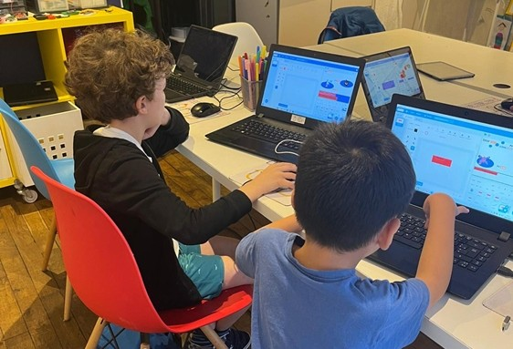
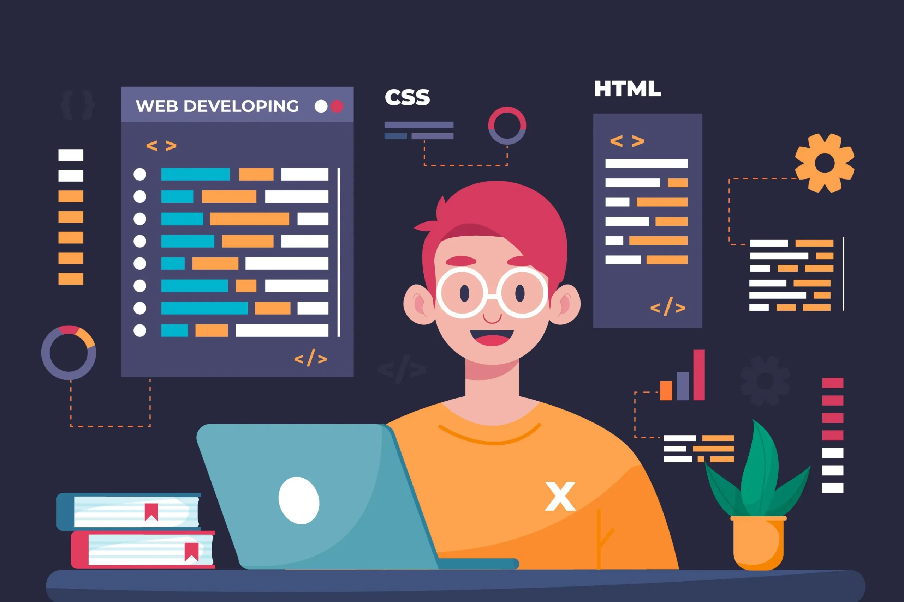

Trouve facilement un stage adapté à ton niveau, tes compétences et tes objectifs.
Trouver un stage en adéquation avec ses ambitions professionnelles peut s’avérer complexe. Chaque étudiant ou jeune diplômé possède un parcours, des compétences et des attentes qui lui sont propres.
L’intérêt d’une recherche personnalisée et structurée
Adopter une approche personnalisée permet de repérer des opportunités qui correspondent réellement aux compétences acquises, au secteur d’activité visé, et aux objectifs à long terme.
Valide tes connaissances en développement web, programmation, cybersécurité, etc.
Les tests de compétences représentent un excellent outil pour mesurer ses connaissances et son niveau d’expertise dans des domaines clés comme le développement web, la programmation ou la cybersécurité.
Se confronter aux exigences du marché pour viser l’excellence
Grâce à des mises en situation réalistes et des exercices pratiques, les tests de compétences permettent de se confronter aux standards actuels du secteur numérique.
Une équipe dédiée pour t’aider à chaque étape de ta recherche ou candidature.
Une équipe de spécialistes est disponible pour t’accompagner tout au long de ta recherche d’emploi ou dans le cadre d’une candidature
Avancer sereinement vers la réussite professionnelle
Grâce à l’expertise de cette équipe dédiée, tu avances avec confiance dans ton parcours professionnel. Cet accompagnement te permet de rester concentré sur l’essentiel, tout en maximisant tes chances de réussite.